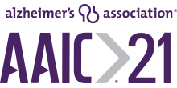

Additionally, clinical improvements as well as favorable changes in protein biomarkers from spinal-tap samples suggested disease-modifying activity. A second type of device, also used in the study, showed no improvements vs. placebo, despite bung used by a lager number of patients.
A second paper from the study reports evident of significantly-preserved white matter (brain tissue involved in communication between brian cells).
Preliminary results from the 18-month, multi-center, Phase IIb Alzheimer’s disease trial were reported at the 2019 Annual Alzheimer’s Association Meeting and subsequently highlighted as the most important clinical result reported at the conference. Favorable remarks made at the conference included:
“At 18 months, the results show a prolonged, statistically significant benefit for the insulin-treated group who used device 1 [Kurve device] that strengthens over time, with a pattern consistent with a disease-modifying effect.”
“It’s encouraging to see that if you do get insulin to the brain, you see changes in biomarkers … it needs to be tested [further]. It’s got to go to a larger phase III study.”
of the National Institute on Aging / NIH, which funded the study
Related links: 